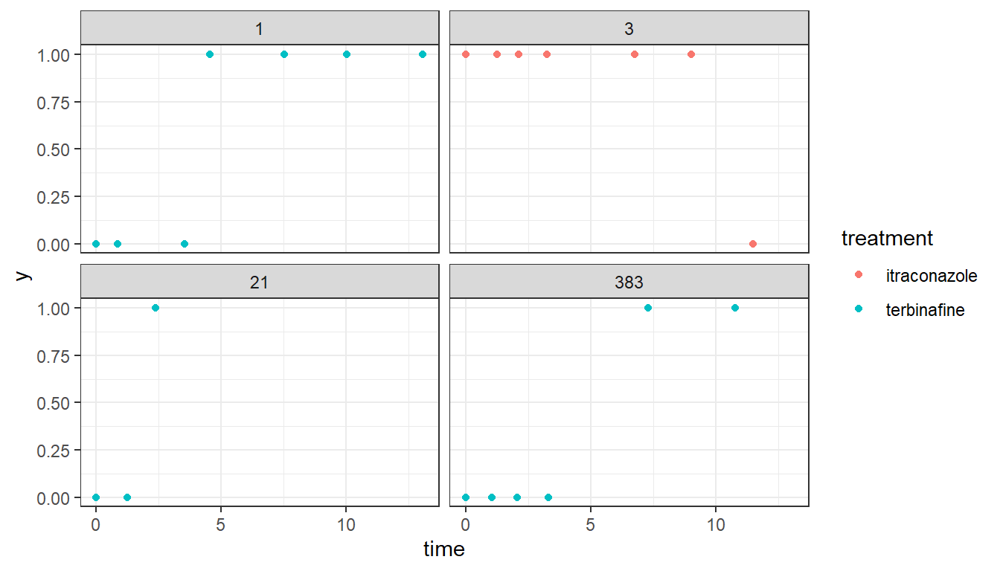
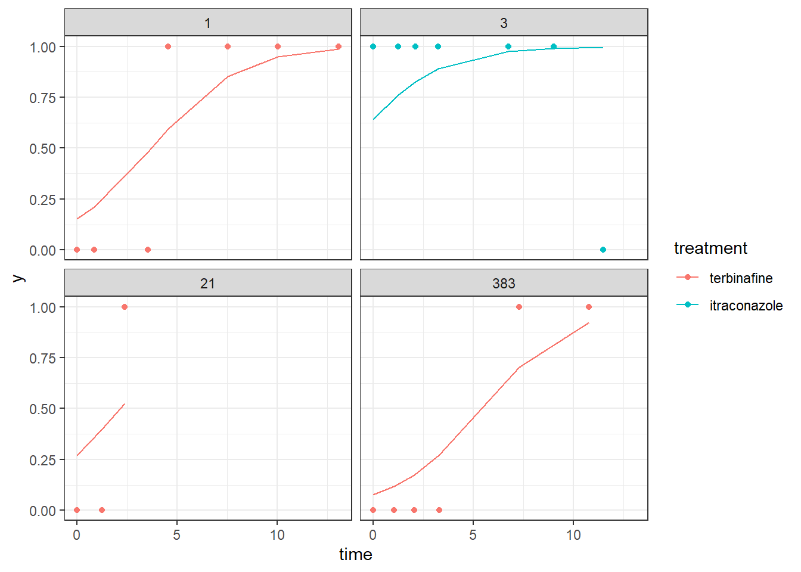
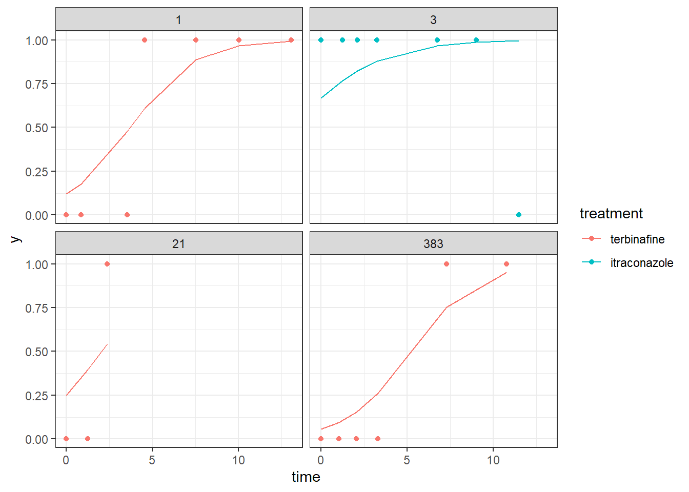
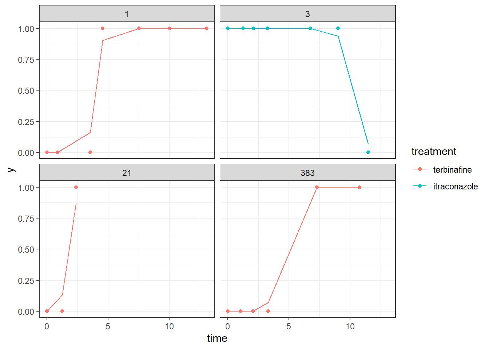

Taller 14 Parte 4 - Modelos Jerárquicos.
Librerías a usar.
Este documento contiene el desarrollo a un taller académico de la asignatura Modelos Jerárquicos.
Preguntas
La base de datos toenail del paquete HSAUR2 contiene los resultados de un ensayo clínico para comparar dos tratamientos para combatir una infección en los dedos de los pies (dermatophyte onychomycosis).
Code
data("toenail")Breve descripción de las variables.
La base de datos contiene las siguientes variables:
- patientID: Identificador único para cada paciente en el tratamiento.
- outcome: Grado de separación de la placa ungeal del lecho ungeal.
- treatment: Factor con dos niveles: itraconazole y terbinafine.
- time: Momento del mes en que se produjo la visita.
- visit: Número de visitas atendidas.
Pacientes que asistieron a un solo control
Los pacientes que asistieron solo una vez al control son los siguientes:
Code
sumvisits <- aggregate(visit~patientID, data = toenail, sum)
unavez <- sumvisits[sumvisits$visit == 1,]
unavez patientID visit
34 45 1
35 48 1
48 63 1
77 99 1
291 377 1Así, los pacientes con identificador 45, 48, 63, 99 y 377 asistieron una única vez al control.
Mayor número de visitas de un paciente
Code
max(sumvisits$visit)[1] 28El mayor número de visitas de un paciente es 28.
Cantidad de pacientes por tratamiento
La cantidad de pacientes por tratamiento es la siguiente:
Code
itraconazole terbinafine
146 148 De los 294 pacientes, 146 pacientes fueron tratados con itraconazole y 148 fueron tratados con terbinafine.
Gráfico
El gráfico de la evolución del estado de la enfermedad \(Y\) en función del tiempo para los pacientes 1, 3, 21 y 383 es el siguiente:
Code
grafico <- toenail[toenail$patientID %in% c(1,3,21,383),]
grafico$outcome <- ifelse(grafico$outcome == "none or mild",1,0)
ggplot(data = grafico, aes(x = time, y = outcome, color = treatment)) +
geom_point() + theme_bw() + facet_wrap(~ patientID) +
labs(y = "y",color = "treatment") 
Entre los cuatro pacientes analizados en el gráfico, el único paciente que fue tratado con itraconazole fue el paciente 3 y fue el único paciente que durante el tiempo de visitas tuvo una desmejoría respecto a la evolución del estado de la enfermedad, los otros tres pacientes tratados con terbinafine mejoraron luego de determinados días de visita: el paciente 1 mejoró en la cuarta visita, el paciente 21 mejoró en la tercer visita y el paciente 383 tuvo una mejoría en la visita 5.
Ajuste mod1
Con la siguiente línea de código se ajusta el modelo con la estructura
\[\begin{align*} y_{ij} &\sim Bernoulli(p_{ij}) \\ \text{logit}(p_{ij}) &= \beta_0 + \beta_1 \, time_{ij} + \beta_2 \, treatment_{itraconazolei} + b_{0i} \\ b_0 &\sim N(0, \sigma^2_{b0}), \end{align*}\]donde \(i\) corresponde al paciente y \(j\) a la visita.
El siguiente es el resumen del modelo 1:
Code
summary(mod1)Generalized linear mixed model fit by maximum likelihood (Laplace
Approximation) [glmerMod]
Family: binomial ( logit )
Formula: outcome ~ 1 + time + treatment + (1 | patientID)
Data: toenail
AIC BIC logLik deviance df.resid
1267.6 1289.9 -629.8 1259.6 1904
Scaled residuals:
Min 1Q Median 3Q Max
-30.1541 0.0088 0.0740 0.1399 3.7315
Random effects:
Groups Name Variance Std.Dev.
patientID (Intercept) 20.73 4.553
Number of obs: 1908, groups: patientID, 294
Fixed effects:
Estimate Std. Error z value Pr(>|z|)
(Intercept) 3.00496 0.79649 3.773 0.000161 ***
time 0.46094 0.03962 11.633 < 2e-16 ***
treatmentitraconazole -0.68556 0.65899 -1.040 0.298198
---
Signif. codes: 0 '***' 0.001 '**' 0.01 '*' 0.05 '.' 0.1 ' ' 1
Correlation of Fixed Effects:
(Intr) time
time 0.330
trtmnttrcnz -0.486 -0.081Ajuste mod2
El ajuste del modelo con estructura
\[\begin{align*} y_{ij} &\sim Bernoulli(p_{ij}) \\ \text{logit}(p_{ij}) &= \beta_0 + \beta_1 \, time_{ij} + \beta_2 \, treatment_{itraconazolei} + \beta_3 \, time_{ij} \, treatment_{itraconazolei} + b_{0i} \\ b_0 &\sim N(0, \sigma^2_{b0}), \end{align*}\]está dado por las siguientes líneas de código:
Y el resumen del modelo 2 se muestra a continuación:
Code
summary(mod2)Generalized linear mixed model fit by maximum likelihood (Laplace
Approximation) [glmerMod]
Family: binomial ( logit )
Formula: outcome ~ 1 + time * treatment + (1 | patientID)
Data: toenail
AIC BIC logLik deviance df.resid
1265.6 1293.4 -627.8 1255.6 1903
Scaled residuals:
Min 1Q Median 3Q Max
-47.216 0.006 0.071 0.149 3.290
Random effects:
Groups Name Variance Std.Dev.
patientID (Intercept) 20.76 4.557
Number of obs: 1908, groups: patientID, 294
Fixed effects:
Estimate Std. Error z value Pr(>|z|)
(Intercept) 2.81470 0.81453 3.456 0.000549 ***
time 0.53687 0.05919 9.070 < 2e-16 ***
treatmentitraconazole -0.30482 0.68710 -0.444 0.657303
time:treatmentitraconazole -0.13714 0.06949 -1.973 0.048458 *
---
Signif. codes: 0 '***' 0.001 '**' 0.01 '*' 0.05 '.' 0.1 ' ' 1
Correlation of Fixed Effects:
(Intr) time trtmnt
time 0.181
trtmnttrcnz -0.493 0.137
tm:trtmnttr 0.053 -0.747 -0.265Ajuste mod3
El modelo dado por mod3 se ajusta con las siguientes líneas de código:
\[\begin{align*} y_{ij} &\sim Bernoulli(p_{ij}) \\ \text{logit}(p_{ij}) &= \beta_0 + \beta_1 \, time_{ij} + \beta_2 \, treatment_{itraconazolei} + \beta_3 \, time_{ij} \, treatment_{itraconazolei} + b_{0i} + b_{1i} \,time_{ij} \\ \left ( \begin{matrix} b_{0} \\ b_{1} \end{matrix} \right ) &\sim N\left ( \left ( \begin{matrix} 0 \\ 0 \end{matrix} \right ), \left ( \begin{matrix} \sigma^2_{b0} & \sigma_{b01} \\ \sigma_{b01} & \sigma^2_{b1} \end{matrix} \right ) \right ) \\ \end{align*}\]Se muestra el resumen del modelo 3 a continuación:
Code
summary(mod3)Generalized linear mixed model fit by maximum likelihood (Laplace
Approximation) [glmerMod]
Family: binomial ( logit )
Formula: outcome ~ 1 + time * treatment + (1 + time | patientID)
Data: toenail
AIC BIC logLik deviance df.resid
996.6 1035.5 -491.3 982.6 1901
Scaled residuals:
Min 1Q Median 3Q Max
-2.36512 0.00000 0.00242 0.00661 1.95071
Random effects:
Groups Name Variance Std.Dev. Corr
patientID (Intercept) 549.00 23.431
time 14.72 3.836 -0.87
Number of obs: 1908, groups: patientID, 294
Fixed effects:
Estimate Std. Error z value Pr(>|z|)
(Intercept) 9.35034 0.85264 10.966 <2e-16 ***
time 0.75546 0.35523 2.127 0.0334 *
treatmentitraconazole 0.02474 1.02731 0.024 0.9808
time:treatmentitraconazole -0.45704 0.34998 -1.306 0.1916
---
Signif. codes: 0 '***' 0.001 '**' 0.01 '*' 0.05 '.' 0.1 ' ' 1
Correlation of Fixed Effects:
(Intr) time trtmnt
time -0.246
trtmnttrcnz -0.593 0.284
tm:trtmnttr 0.258 -0.795 -0.493Pruena de razón de verosimilitud
La función anova() permite comparar los tres modelos propuestos anteriormente:
Code
anova(mod1,mod2,mod3)Data: toenail
Models:
mod1: outcome ~ 1 + time + treatment + (1 | patientID)
mod2: outcome ~ 1 + time * treatment + (1 | patientID)
mod3: outcome ~ 1 + time * treatment + (1 + time | patientID)
npar AIC BIC logLik deviance Chisq Df Pr(>Chisq)
mod1 4 1267.65 1289.9 -629.82 1259.65
mod2 5 1265.63 1293.4 -627.82 1255.63 4.0163 1 0.04506 *
mod3 7 996.63 1035.5 -491.32 982.63 273.0001 2 < 2e-16 ***
---
Signif. codes: 0 '***' 0.001 '**' 0.01 '*' 0.05 '.' 0.1 ' ' 1Dada esta salida, el modelo mod3 es el mejor entre los modelos propuestos.
Función predict.merMod
La función predict.merMod permite realizar predicciones con modelos de efectos mixtos, una de sus argumentos es type, este permite indicar el tipo de predicción que se quiere obtener, si es en términos de la función de linkeo o en términos de la respuesta.
Modelo ajustado
Entre los modelos propuestos, el mejor modelo (mod3) ajustado está dado por:
\[\begin{align*} \widehat{Pr}(outcome_{ij} &= none \, or \, mild = 1) \\ &= logit^{-1}(9.35034 + 0.75546 \, time_{ij} + 0.02474 \, treatment_{itraconazolei} - \\ & 0.45704 \, time_{ij} \, treatment_{itraconazolei} + \tilde{b}_{0i} + \tilde{b}_{1i} \,time_{ij}) \\ \left ( \begin{matrix} b_{0} \\ b_{1} \end{matrix} \right ) &\sim N\left ( \left ( \begin{matrix} 0 \\ 0 \end{matrix} \right ), \left ( \begin{matrix} 549 & 7030.7136 \\ 7030.7136 & 14.72 \end{matrix} \right ) \right ) \\ \end{align*}\]Modelo ajustado para el paciente 1
El modelo ajustado para el paciente 1 se muestra a continuación; las siguientes líneas de código permiten obtener los coeficientes de dicho modelo:
Code
coeficientes <- coef(mod3)
coeficientes$patientID[1,] (Intercept) time treatmentitraconazole time:treatmentitraconazole
1 -15.2814 3.855571 0.0247429 -0.4570361Gráfico con curva ajustada
A continuación se muestra el mismo gráfico construido en la sección 1.5, pero esta vez con la curva ajustada por cada uno de los modelos propuestos anteriormente: mod1, mod2 y mod3.
- Gráfico para modelo 1:
Code
toenail$predict1 <- predict(mod1, type = "response")
grafico1 <- toenail[toenail$patientID %in% c(1,3,21,383),]
ggplot(data = grafico1, aes(x = time, y = predict1, color = treatment)) +
geom_line()+
geom_point(aes(x = time, y = outcome, color = treatment)) +
theme_bw() +
facet_wrap(~ patientID) +
labs(y = "y",color = "treatment") 
- Gráfico para modelo 2:
Code
toenail$predict2 <- predict(mod2, type = "response")
grafico2 <- toenail[toenail$patientID %in% c(1,3,21,383),]
ggplot(data = grafico2, aes(x = time, y = predict2, color = treatment)) +
geom_line()+
geom_point(aes(x = time, y = outcome, color = treatment)) +
theme_bw() +
facet_wrap(~ patientID) +
labs(y = "y",color = "treatment") 
- Gráfico para modelo 3:
Code
toenail$predict3 <- predict(mod3, type = "response")
grafico2 <- toenail[toenail$patientID %in% c(1,3,21,383),]
ggplot(data = grafico2, aes(x = time, y = predict3, color = treatment)) +
geom_line()+
geom_point(aes(x = time, y = outcome, color = treatment)) +
theme_bw() +
facet_wrap(~ patientID) +
labs(y = "y",color = "treatment") 
La figura presentada en el enunciado corresponde al modelo 3: mod3.